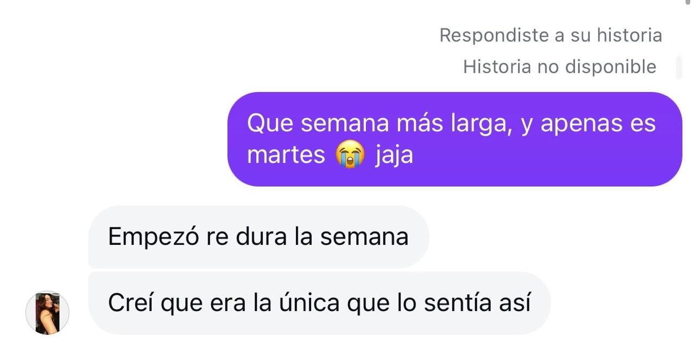
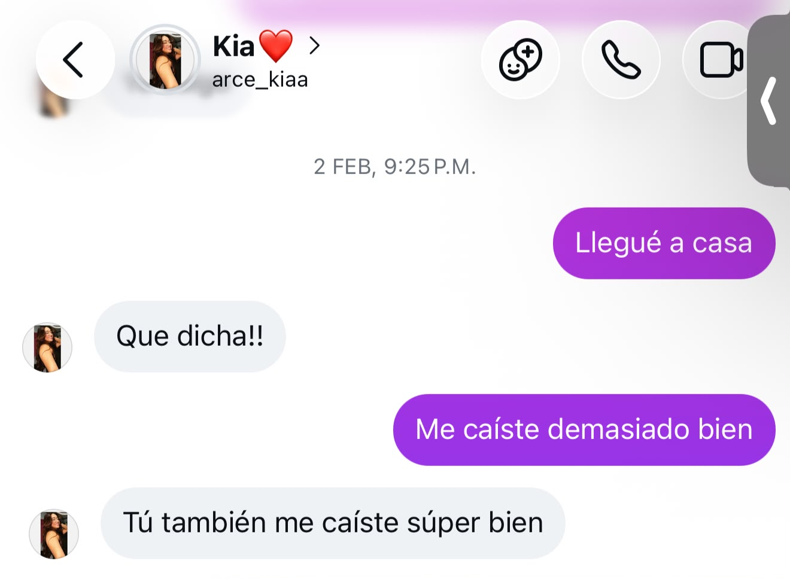
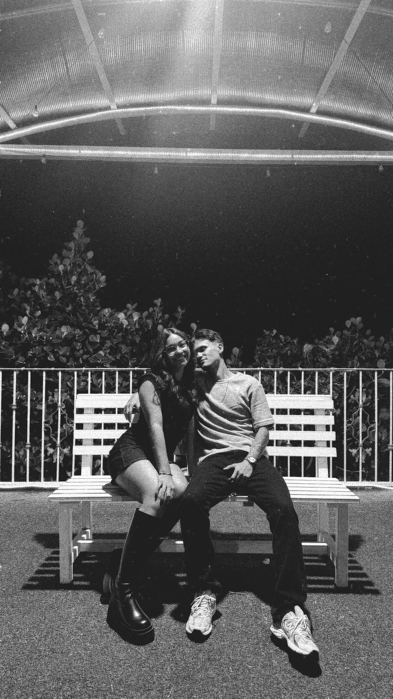

Si estás acá es porque tuve bastante tiempo libre xd y estuve refrescando un poco de HTML.
Así que lo usaré para recordarte varias cosas muy importantes.
Lo primero es recordar cómo comenzó todo, aunque aún me dé pena lo poco ingenioso que fui para responderte la historia con ese "semana más larga" (que estuve como media hora pensando qué ponerle).

Aunque me dé pena, me hace sentir feliz porque gracias a ese penoso intento de sacar conversación, tengo este tiempo de sentirme el hombre más afortunado del mundo.
Otro recuerdo que me gustaría guardar en este HTML es la primera vez que salimos — ya me fijé y la fecha exacta es lunes 2 de febrero.

Y al igual que como te respondí la historia, un plan totalmente random como salir a correr xd jajaja. Pero sabes amor, ese día fue cuando me di cuenta de lo increíble que eres, cada palabra, cada historia o cada dato random que me decía, me hacía ver lo realmente interesante que eres.
Quiero terminar hablándote de ti.
De lo maravillosa que eres y no solo de mi casi novia, sino la mujer que admiro muchísimo: una mujer con criterio propio, decidida, llena de sueños, metas y un propósito en la vida. Y por encima de todo, una mujer con un corazón inmenso.
Te amo con todo mi corazón y te elijo en esta vida y en todas❤️

lo más importante
Esta página es muy importante, porque acá voy a generar un contador con un botón de inicio que activaremos el día que formalicemos la relación. Quiero que sea una forma de recordar esa fecha tan importante para ambos.
esperando ese día